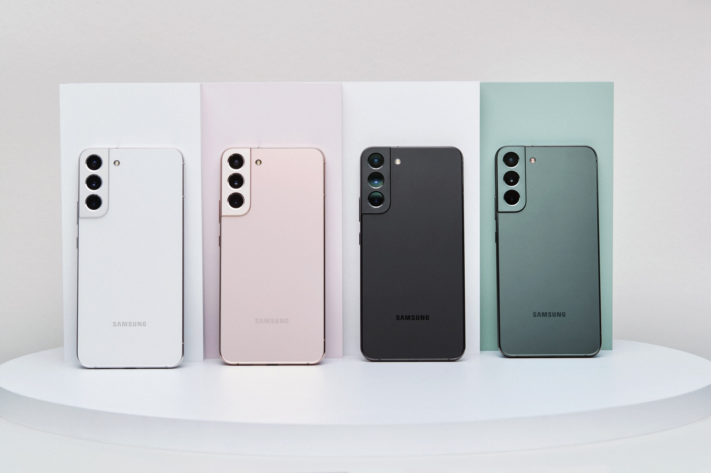

Top 5 Melhores celulares de 2022
5° Samsung Galaxy S22 Plus - R$ 4.498,10

O Samsung Galaxy S22+ é uma excelente opção para quem gosta de smartphones com telas grandes e busca por um aparelho que possua câmeras de alta qualidade e um processador que proporcione uma experiência leve e tranquila. Confira mais detalhes:
Tela grande: O Samsung Galaxy S22+ possui uma tela de 6,6 polegadas: ideal para quem quer assistir filmes, vídeos ou jogar pelo celular. Além disso, possui bordas arredondadas e uma moldura fina e polida para um display expansivo e equilibrado.
Fotos incríveis com o Samsung Galaxy S22+ A câmera ultragrande-angular de 12 MP e a grande-angular de 50 MP possuem um sensor que ilumina sua foto na luz noturna, deixando tudo bem nítido mesmo com pouca luz. Além disso, a lente frontal tem 10 MP e a câmera teleobjetiva possui zoom óptico de 3x para você tirar fotos ótimas à distância.
Nada de travamentos O processador de 4 nm dá um show à parte. É um aparelho que possui alta performance e desempenho, ou seja, é rápido e não trava, claro.
Invista em qualidade para o seu dia a dia com um smartphone que possui tela grande, câmeras que entregam ótimas fotos em diferentes iluminações e um processador poderoso, que torna tudo mais fácil e rápido. Veja uma foto dessa perfeição em forma de aparelho na foto acima.
4° ASUS Zenfone 9 - R$ 4.499,00
O ASUS Zenfone 9 é um celular da ASUS, lançado em 28/07/2022. O smartphone vem com Android 12, ele tem 16 GB, 8 GB de memória RAM, 128 GB, 256 GB e UFS 3.1 de armazenamento interno. Seu processador é um Qualcomm Snapdragon 8 Plus Gen 1 (4 nm) SM8450. A câmera principal de 50 MP, além de uma de 12 MP (ultrawide). As selfies são realizadas por uma câmera frontal de 12 MP, f/2.5 (wide).
3° Motorola Edge 30 Ultra - R$ 5.309,10

O Motorola Edge 30 Ultra é um celular da Motorola, lançado em 08/09/2022. O smartphone vem com Android 12, ele tem 12 GB e 8 GB de memória RAM, 128 GB, 256 GB e UFS 3.1 de armazenamento interno. Seu processador é um Qualcomm Snapdragon 8 Plus Gen 1 (4 nm) SM8450. O celular conta com uma tela 6.67 de Proporção 20:9 e 2400 x 1080 polegadas com suporte a 1B Colors, 700 nits e HDR 10 Plus.
A câmera principal de 200 MP, além de uma de 50 MP (ultrawide), 12 MP, f/1.6, (telephoto). As selfies são realizadas por uma câmera frontal de 60 MP.
2° Samsung Galaxy Z Fold 4 - R$ 8.723,72
O Samsung Galaxy Z Fold 4 é um celular da Samsung, lançado em 10/08/2022. O smartphone vem com Android 12L e One UI 4.1.1, ele tem 12 GB de memória RAM, 1 TB, 256 GB, 512 GB de armazenamento interno. Seu processador é um Qualcomm Snapdragon 8 Plus Gen 1 (4 nm) SM8450. O celular conta com uma tela 7.6 de 2176 x 1812 polegadas com suporte a 120Hz, HDR 10 Plus e Tela externa: 6.2 pol, 2316x904. A câmera principal de 50 MP, além de uma de 12 MP(ultrawide) e outra de 10 MP (telephoto) 3x zoom ótico. As selfies são realizadas por uma câmera frontal de 4 MP (abaixo da tela) e Câmera Cover: 10 MP.
1° Samsung Galaxy S22 Ultra - R$ 5.499,00
O Samsung Galaxy S22 Ultra é um celular da Samsung, lançado em 09/02/2022. O smartphone vem com Android 12 e One UI 4, ele tem 12 GB, 16 GB e 8 GB de memória RAM, 1 TB, 128 GB, 256 GB e 512 GB de armazenamento interno. Seu processador é um Qualcomm Snapdragon 8 Gen1 (4 nm) SM8450 e Samsung Exynos 2200 (4 nm). O celular conta com uma tela 6.8 de 3088x1440 polegadas com suporte a 120Hz, 1750 nits, Always-on display e HDR 10 Plus. A câmera principal de 108 MP, além de uma de 10 MP 10x zoom ótico, outra de 10 MP 3x zoom ótico, Dual Pixel PDAF, OIS e Super estabilidade. As selfies são realizadas por uma câmera frontal de 40 MP.
Postagens recentes
O metaverso terá um direcionamento definido ainda este ano, bem como haverá o avanço na tecnologia blockchain e o desenvolvimento da computação quântica.
Saiba Mais